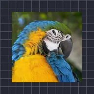

Lật lớp

Lật lớp như lật thẻ trong 3D; mặt sau có thể trong suốt, là hình ảnh hoặc màu.
Cài đặt
| Cài đặt | Loại | Phạm vi | Mặc định |
|---|---|---|---|
| Xoay X | Góc | -3600° đến 3600° | 0° |
| Xoay Y | Góc | -3600° đến 3600° | 35° |
| Xoay Z | Góc | -3600° đến 3600° | 0° |
| Trục | Góc | -3600° đến 3600° | 0° |
| Mặt sau | Lựa chọn | Trong suốt, Hình ảnh, Màu | Trong suốt |
| Màu mặt sau | Màu | – | #FFFFFF |
| Vị trí | Điểm (X, Y) | -5000 px đến 5000 px | 0 px, 0 px |
| Tỷ lệ | Số | 0.05 đến 10 | 1 |
| Phối cảnh | Số | 0 đến 1 | 0.5 |
| Đổ bóng | Số | 0 đến 1 | 0.6 |
| Góc sáng | Góc | -3600° đến 3600° | 135° |
| Độ bóng | Số | 0 đến 1 | 0.3 |